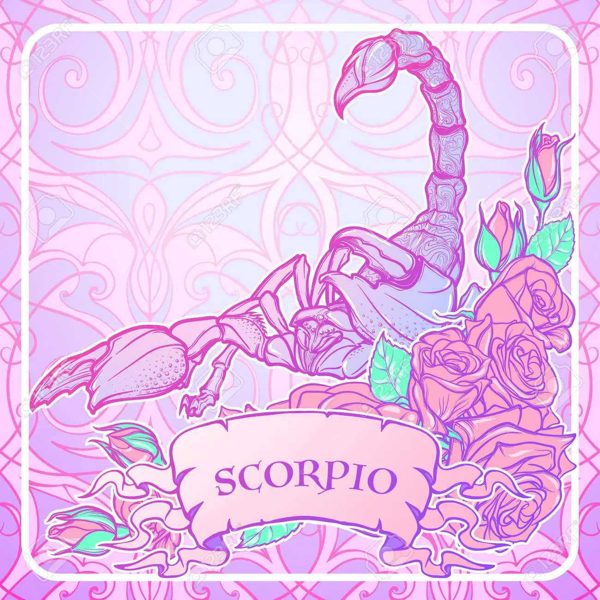

Hablemos de astrología
Descubre los secretos del universo a través de la astrología. Explora tu carta astral personalizada, obtén horóscopos precisos y encuentra orientación en el amor, la carrera y las finanzas. Nuestros expertos astrólogos te ayudarán a desentrañar los misterios celestiales y a encontrar tu propósito en la vida. Únete a nosotros en este viaje cósmico hacia la autodescubrimiento. ¡Bienvenido a nuestra página de astrología!
